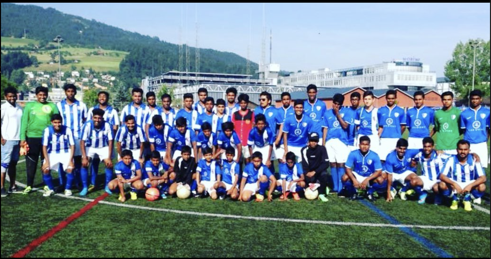

Unsere Geschichte
Unsere Gründung reicht bis in die achtziger Jahre zurück. Als einer der ersten tamilischen Fußballclubs der Schweiz wurde der FC City Boys ZH 1989 in Zürich gegründet. Der Verein setzt sich für sportliche Aktivitäten der jugendlichen Tamilen in der Schweiz ein. Es soll den sportlichen Austausch und den Zusammenhalt unter den Tamilen fördern. Mit dem Fußball wollen wir unseren Beitrag in der Gesellschaft leisten und den Tamilen in der Schweiz die Hoffnung auf eine gemeinsame Zukunft geben. Seit seiner Gründung hat der Verein viele Erfolge erzielt und eine bedeutende Rolle in der Förderung des Jugendfußballs gespielt. Der FC City Boys Zürich ist stolz darauf, zahlreiche Turniere und Meisterschaften gewonnen zu haben. Der Verein engagiert sich nicht nur im sportlichen Bereich, sondern auch in sozialen Projekten, sowohl in der Schweiz als auch international. Besonders hervorzuheben sind die Hilfsprojekte in Sri Lanka, bei denen der Verein nach der Tsunami-Katastrophe und während der Corona-Pandemie Unterstützung leistete. Unsere Mitglieder sind nicht nur Spieler, sondern auch engagierte Freiwillige, die den Verein in vielerlei Hinsicht unterstützen. Der FC City Boys Zürich hat es sich zur Aufgabe gemacht, Werte wie Respekt, Teamgeist und Fairplay zu fördern. Die Gemeinschaft und der Zusammenhalt innerhalb des Vereins sind uns sehr wichtig. Wir blicken mit Stolz auf unsere Vergangenheit und freuen uns auf eine erfolgreiche Zukunft.
Lizenziert von fccityboyszh